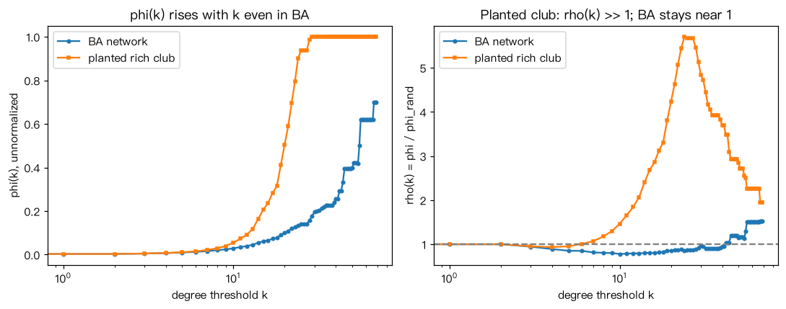

Example05 / 09
富人俱乐部系数 phi(k) 及其保度归一化 rho(k)
构造两张度序列相近的网络：BA 网络，以及在 BA 网络上把前 2% 高度节点之间“补齐”连接后 再用保度交换恢复原度序列的网络（植入的富人俱乐部）。 计算未归一化 phi(k) 与归一化 rho(k) = phi(k)/phi_rand(k)，phi_rand 取 20 个保度随机网络的平均。 解读：即使是 BA 网络，phi(k) 也随 k 上升，单看 phi(k) 会误判；rho(k) > 1 才是富人俱乐部的证据。
Output输出图

Output文字输出
BA 网络 k > 5: N_>k = 577, phi = 0.010, phi_rand = 0.012, rho = 0.85 k > 10: N_>k = 181, phi = 0.029, phi_rand = 0.037, rho = 0.78 k > 20: N_>k = 53, phi = 0.099, phi_rand = 0.117, rho = 0.85 k > 30: N_>k = 27, phi = 0.197, phi_rand = 0.203, rho = 0.97 k > 40: N_>k = 18, phi = 0.255, phi_rand = 0.268, rho = 0.95 k > 60: N_>k = 7, phi = 0.619, phi_rand = 0.410, rho = 1.51 植入富人俱乐部 k > 5: N_>k = 577, phi = 0.011, phi_rand = 0.012, rho = 0.95 k > 10: N_>k = 181, phi = 0.055, phi_rand = 0.037, rho = 1.46 k > 20: N_>k = 53, phi = 0.505, phi_rand = 0.120, rho = 4.22 k > 30: N_>k = 27, phi = 1.000, phi_rand = 0.207, rho = 4.83 k > 40: N_>k = 18, phi = 1.000, phi_rand = 0.270, rho = 3.70 k > 60: N_>k = 7, phi = 1.000, phi_rand = 0.443, rho = 2.26
Code代码
# 构造两张度序列相近的网络：BA 网络，以及在 BA 网络上把前 2% 高度节点之间“补齐”连接后
# 再用保度交换恢复原度序列的网络（植入的富人俱乐部）。
# 计算未归一化 phi(k) 与归一化 rho(k) = phi(k)/phi_rand(k)，phi_rand 取 20 个保度随机网络的平均。
# 解读：即使是 BA 网络，phi(k) 也随 k 上升，单看 phi(k) 会误判；rho(k) > 1 才是富人俱乐部的证据。
import numpy as np
import networkx as nx
G0 = nx.barabasi_albert_graph(2000, 3, seed=4)
deg0 = dict(G0.degree())
# 植入富人俱乐部：把度最高的 40 个节点两两相连，再为每条新边删去一条“枢纽-低度节点”边并
# 把被拆开的低度端点两两接上，近似保持度序列（剩余偏差很小）。
rng = np.random.default_rng(0)
G1 = G0.copy()
hubs = sorted(G1, key=lambda x: deg0[x], reverse=True)[:40]
hubset = set(hubs)
for i in range(len(hubs)):
for j in range(i + 1, len(hubs)):
a, b = hubs[i], hubs[j]
if G1.has_edge(a, b):
continue
na = [x for x in G1[a] if x not in hubset]
nb = [x for x in G1[b] if x not in hubset]
if not na or not nb:
continue
x, y = rng.choice(na), rng.choice(nb)
if x == y or G1.has_edge(x, y):
continue
G1.remove_edges_from([(a, x), (b, y)])
G1.add_edges_from([(a, b), (x, y)])
assert dict(G1.degree()) == deg0 # 度序列严格不变
def rich_club(G):
return nx.rich_club_coefficient(G, normalized=False)
def rich_club_rand(G, n_null=20, seed=0):
acc = {}
for s in range(n_null):
H = G.copy()
m = H.number_of_edges()
nx.double_edge_swap(H, nswap=10 * m, max_tries=1000 * m, seed=seed + s)
for k, v in rich_club(H).items():
acc.setdefault(k, []).append(v)
return {k: np.mean(v) for k, v in acc.items()}
curves = [] # 保存 phi 与 phi_rand 用于作图
for name, G in [("BA 网络", G0), ("植入富人俱乐部", G1)]:
phi = rich_club(G)
phi_r = rich_club_rand(G, n_null=20, seed=10)
curves.append((phi, phi_r))
print(name)
for k in [5, 10, 20, 30, 40, 60]:
if k in phi and phi_r.get(k, 0) > 0:
n_rich = sum(1 for _, d in G.degree() if d > k)
print(f" k > {k:3d}: N_>k = {n_rich:4d}, phi = {phi[k]:.3f}, phi_rand = {phi_r[k]:.3f}, "
f"rho = {phi[k] / phi_r[k]:.2f}")
# 作图：未归一化 phi(k) 与归一化 rho(k) = phi / phi_rand
import matplotlib.pyplot as plt
fig, ax = plt.subplots(1, 2, figsize=(10, 4))
for (phi, phi_r), lab, mk in zip(curves, ["BA network", "planted rich club"], ["o", "s"]):
ks = [k for k in sorted(phi) if phi_r.get(k, 0) > 0 and sum(1 for _, d in G0.degree() if d > k) >= 5]
ax[0].plot(ks, [phi[k] for k in ks], marker=mk, ms=3, label=lab)
ax[1].plot(ks, [phi[k] / phi_r[k] for k in ks], marker=mk, ms=3, label=lab)
ax[0].set_ylabel("phi(k), unnormalized"); ax[0].set_title("phi(k) rises with k even in BA")
ax[1].axhline(1, color="gray", ls="--"); ax[1].set_ylabel("rho(k) = phi / phi_rand")
ax[1].set_title("Planted club: rho(k) >> 1; BA stays near 1")
for a in ax:
a.set_xscale("log"); a.set_xlabel("degree threshold k"); a.legend()
plt.tight_layout(); plt.show()Run在浏览器中运行
首次加载 Python 环境约需 20–40 秒；可以修改参数后重新运行。